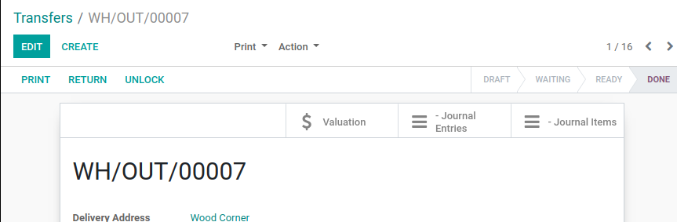

<?xml version="1.0" encoding="utf-8"?>
<section class="oe_container">
    <div class="oe_row oe_spaced">
        <div class="oe_span12">
            <h2 class="oe_slogan">Denker - - Stock Move Entries View</h2>
            <h4 class="oe_slogan">Grupo Denker, www.grupodenker.com</h4>
        </div>
        <div class="oe_row oe_spaced">
        <ul>
           <li style="list-style:none !important;">&nbsp;&nbsp;
              Con este módulo, se agrega en la vista de Stock Picing o Tranferencias,
              que están en la siguiente ruta:  [Inventory->Operations->Tranfers]
              Accesos para los Journal Entries y Journal Items.
              Mostrará una lista de los documentos relacionados mediante el campo "Ref"
           </li>
        </ul>
        </div>
        <div class="oe_span12">
            
        </div>
        <div class="oe_span12">
            <p class="oe_mt32">
                <p>Éste módulo solo agrega los botones en la siguiente vista: <br/>
                    [stock.view_picking_form]<br/>
                        - [Journal Entries]<br/>
                        - [Journal Items]<br/>
            </p>

        </div>
    </div>
</section>
